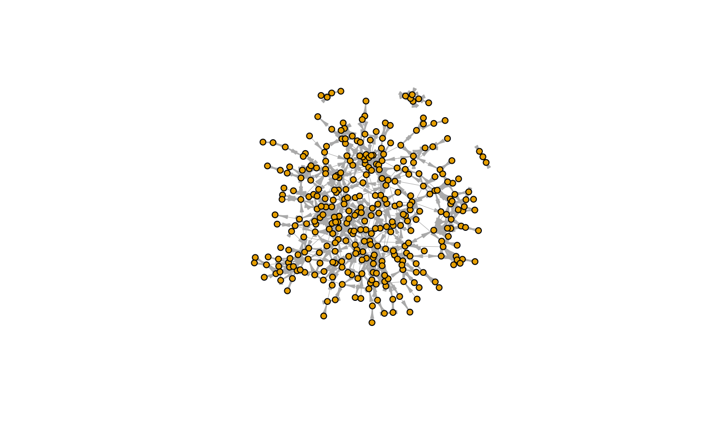
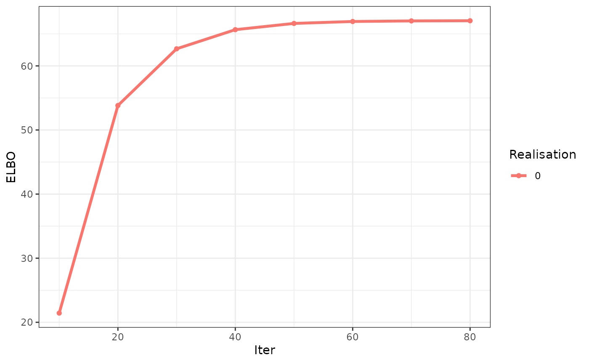
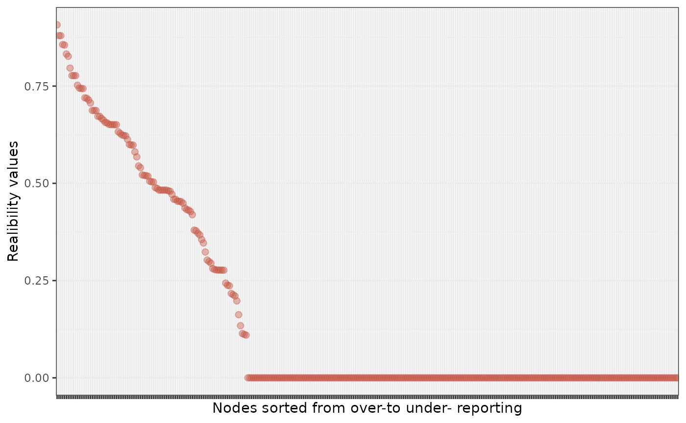

Karnataka Data
karnataka.Rmd
library(vimure)
library(igraph)
#>
#> Attaching package: 'igraph'
#> The following objects are masked from 'package:stats':
#>
#> decompose, spectrum
#> The following object is masked from 'package:base':
#>
#> union
library(ggcorrplot)
#> Loading required package: ggplot2
library(reshape2)The goal of this article is to run the vimure model on the real dataset Karnataka.
Read the edgelist
First you’ll need to read a edgelist.
URL <- "https://raw.githubusercontent.com/latentnetworks/vimure/develop/data/input/india_microfinance/formatted/"
village <- "12" # change this parameter to run in other village
PATH <- paste0(URL, paste0("vil", village, "_edges.csv"))
df_edges <- read.csv(PATH, stringsAsFactors = F)
head(df_edges)
#> respondent i j type weight
#> 1 1200101 1200101 1202101 borrowmoney 1
#> 2 1200102 1200102 1200402 borrowmoney 1
#> 3 1200201 1200201 1207901 borrowmoney 1
#> 4 1200202 1200202 1216002 borrowmoney 1
#> 5 1200801 1200801 1200601 borrowmoney 1
#> 6 1200802 1200802 1200901 borrowmoney 1Then, run the code below to preprocess the data, removing self-loops and re-labeling layers names.
df_edges$layer <- factor(df_edges$type,
levels=c(
"borrowmoney","receivemoney", "receiveadvice", "helpdecision",
"keroricego", "keroricecome", "visitgo", "visitcome"
), labels=c("money", "money", "advice", "advice", "kerorice", "kerorice", "visit", "visit"))
layer <- "visit" # Change this to run for a different layer
df_edges <- df_edges[df_edges$layer %in% layer, ]
df_edges <- df_edges[df_edges$i != df_edges$j, ]
head(df_edges)
#> respondent i j type weight layer
#> 2022 1200101 1200101 1200401 visitgo 1 visit
#> 2023 1200102 1200102 1212904 visitgo 1 visit
#> 2024 1200201 1200201 1206102 visitgo 1 visit
#> 2025 1200202 1200202 1200401 visitgo 1 visit
#> 2026 1200801 1200801 1208701 visitgo 1 visit
#> 2027 1200802 1200802 1214902 visitgo 1 visitUsing an igraph network
Vimure models expects as input an igraph object that can contains the layer, reporter and weight of each edge. Use igraph::graph_from_data_frame for create a graph using a dataset. The first two columns are the edgelist. Additional columns are considered as edge attributes (See more in ?graph_from_data_frame).
Vimure extracts these attributes by name, so it is crucial to rename the attributes before creating the graph (or parse the edgelist directly by
parse_graph_from_edgelistand use params ego,alter,.. for mapping columns names - section below):
edges <- df_edges[c(2:5, 1)] # Reorder columns
names(edges) <- c("Ego", "Alter", "layer", "weight", "reporter") # Rename
graph <- igraph::graph_from_data_frame(edges)
graph <- set_graph_attr(graph, "layout", layout_with_fr(graph, niter=600))
plot(graph,
vertex.size=5,
vertex.label=NA,
edge.width=0.5,
edge.arrow.size=0.5,
edge.arrow.width=0.5)
Calculate some network statistics from the adjacency matrix:
message(
"Nodes: ", length(V(graph)),
" | Edges: ", gsize(graph),
" | Avg. degree: ", mean(degree(graph)), #directed graph,
" | Reciprocity: ", reciprocity(graph)
)
#> Nodes: 336 | Edges: 891 | Avg. degree: 5.30357142857143 | Reciprocity: 0.7003367003367Run the model:
# Graph input
model <- vimure(graph, num_realisations=5L, max_iter=100L, seed=5)
#> Loaded vimure versionParsing data to vimure classes
Vimure models expect as input the attributes X and R of a parse_graph_from_edgelist result. parse_graph_from_edgelist expects a dataframe with two required columns (Ego and Alter) and three optional columns ( layer, reporter and weight). Rename the dataframe’s columns or use params ego,alter,… of parse_graph_from_edgelist for mapping column names to convert.
vm_graph <- parse_graph_from_edgelist(df_edges, ego="i", alter="j", reporter="respondent")And run the model:
model <- vimure(vm_graph$X, vm_graph$R, num_realisations=5L, max_iter=100L)Diagnostics
diag <- summary(model)
#> ---------------
#> - DIAGNOSTICS -
#> ---------------
#>
#> Model: ViMuRe(T)
#>
#> Priors:
#> - eta: shp=0.50 rte=1.00
#> - theta: shp=0.10 rte=0.10
#> - lambda: shp=10.0 rte=10.0
#> - rho: a (1, 336, 336, 2) tensor (to inspect it, run <diag_obj>.model.pr_rho)
#>
#> Posteriors:
#> - G_exp_lambda_f: [[8.29947456e-05 4.42536495e-01]]
#> - G_exp_nu_f: 0.67
#> - G_exp_theta_f: a (1, 336) tensor (to inspect it, run <diag_obj>.model.G_exp_theta_f)
#> - rho_f: a (1, 336, 336, 2) tensor (to inspect it, run <diag_obj>.model.rho_f)
#>
#> Optimisation:
#>
#> Elbo: 67.118538478266Elbo values
df_elbo <- diag$trace
ggplot(df_elbo, aes(x=iter, y=elbo, group=realisation, color=factor(realisation))) +
geom_point() +
geom_line(size=1.2) +
theme_bw() +
labs(x = "Iter", y="ELBO", color="Realisation")
Estimated realibility
plot_df <- reshape2::melt(diag$reliability, id = "node")
ggplot(plot_df, aes(x = reorder(factor(node), -value), y=value)) +
geom_point(alpha = 0.4, size=2, color = "#c45241") +
theme_bw() +
labs(x = "Nodes sorted from over-to under- reporting", y = "Realibility values") +
theme(axis.text.x=element_blank())